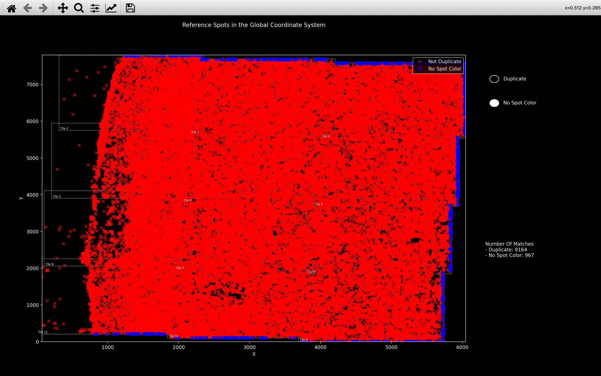

Get Reference Spots
The get reference spots step of the pipeline uses the affine transforms
found in the register step of the pipeline to compute the corresponding coordinate of each
reference spot (detected on the reference round/reference channel (\(r_{ref}\)/\(c_{ref}\)) in
find spots step) in each imaging round and channel.
By reading off the intensity values at these coordinates, an \(n_{rounds} \times n_{channels}\)
intensity vector or spot_color can be found for each reference spot.
These intensity vectors are saved as colors in the ref_spots NotebookPage
which is added to the Notebook after this stage is finished and are used for assigning each spot to a gene
in the call reference spots step.
Variables in ref_spots NotebookPage
All variables in the ref_spots NotebookPage are arrays
where the size of the first axis is \(n_{spots}\) i.e. each variable has info for each reference spot.
The variables local_yxz, isolated and tile are just copied from nb.find_spots.spot_details.
The variables gene_no, score, score_diff, intensity are not computed until the
call reference spots step but because each is an array of size \(n_{spots}\),
they are saved in the ref_spots page instead of the
call_spots page.
Before the call reference spots step though, their values will be set to None.
This is so if there is an error in call_reference_spots,
get_reference_spots won't have to be re-run.
Spot Colors
Duplicates
We don't find the spot_color for every reference spot because there will be duplicates - the same spot detected
on more than 1 tile. This is because there is an overlap between the tiles.
To remove these duplicates, we only keep spots
which were detected on a tile (saved in nb.find_spots.spot_details
during the find spots step) which is also the tile whose centre they are closest to in the
global coordinate system (nb.stitch.tile_origin + nb.basic_info.tile_centre).
The view_stitch function shows the duplicate spots in blue.
Applying transform
To determine the aligned coordinate of each reference spot detected on tile \(t\) in round \(r\), channel \(c\), we
must apply the affine transform found for
tile \(t\), round \(r\), channel \(c\): nb.register.transform[t, r, c] to the \(yxz\) coordinates of the spots.
First the \(yxz\) coordinates must be centered (subtract nb.basic_info.tile_centre) and the z-coordinate
must be converted into units of yx-pixels (multiply by z_scale = nb.basic_info.pixel_size_z /
nb.basic_info.pixel_size_xy).
The \(n_{spots} \times 3\) array must then be padded with ones to form an \(n_{spots} \times 4\) array, so it can be
multiplied by the \(4 \times 3\) transform. The coordinates are prepared in this way because they must be in the same
form as was used to compute the transform (see Preparing point clouds and Padding ref_spot_yxz notes
here).
Once the \(n_{spots} \times 4\) spot coordinate array is multiplied by the \(4 \times 3\) transform, a \(n_{spots} \times 3\) array is obtained, and after the z-scaling and centering are removed, this gives the corresponding \(yxz\) coordinates in round \(r\), channel \(c\).
Reading off intensity
After the \(yxz\) coordinates in tile \(t\), round \(r\), channel \(c\), are found, the intensity values at these coordinates
are obtained by supplying the \(n_{spots} \times 3\) array as the parameter yxz in the function
load_tile.
After doing this for all tiles,
rounds and channels, we obtain the spot_color where spot_color[s, r, c] is the intensity value found for
spot s in round r, channel c.
Invalid Values
For some spots, the corresponding coordinates in round \(r\), channel \(c\), will be outside the bounds of the tile and
thus the intensity cannot be read off. We therefore only save to the Notebook spots which remain in the tile
bounds across all rounds and channels, allowing the full spot_color array to be computed.
Once the Notebook has the ref_spots NotebookPage, when
view_stitch is run, there will a button called No Spot Color which shows in blue
all spots removed for this reason:

spot_color outside rounds/channels used
nb.ref_spots.colors is an n_spots x nb.basic_info.n_rounds x nb.basic_info.n_channels array.
nb.ref_spots.colors[s, r, c] will be set to -nb.basic_info.tile_pixel_value_shift for all spots, s,
if either r is not in nb.basic_info.use_rounds or c is not in nb.basic_info.use_channels.
This is because it is impossible for an actual pixel to have this intensity, due to clipping
done in the extract step when
saving the tiles.
So basically, this is an integer version of nan.
Pseudocode
This is the pseudocode outlining the basics of this step of the pipeline.
r_ref = reference round
c_ref = reference round
spot_yxz[t, r, c] = yxz coordinates for spots detected on tile t,
round r, channel c.
transform[t, r, c] = affine transform between tile t, round r_ref, channel c_ref
and round r, channel c.
[n_tiles x n_rounds x n_channels x 4 x 3]
Remove duplicate spots from spot_yxz[:, r_ref, c_ref].
Center reference point cloud:
spot_yxz[:, r_ref, c_ref] = spot_yxz[:, r_ref, c_ref] - tile_centre
Convert z coordinate into yx-pixels:
spot_yxz[:, r_ref, c_ref][:, 2] = spot_yxz[:, r_ref, c_ref][:, 2] * z_scale
Pad reference point cloud with ones:
spot_yxz[:, r_ref, c_ref][:, 3] = 1
for t in use_tiles:
spot_colors_t: [n_spots_t x n_rounds x n_channels]
for r in use_rounds:
for c in use_channels:
Apply transform to get new coordinates in round r, channel c:
spot_yxz_rc = spot_yxz[t, r_ref, c_ref] @ transform[t, r, c]
Convert z coordinate back to z-pixels:
spot_yxz_rc[:, 2] = spot_yxz_rc[:, 2] / z_scale
Remove centering:
spot_yxz_rc = spot_yxz_rc + tile_centre
For spots where spot_yxz_rc is outside the tile bounds,
cannot read off intensity:
spot_colors_t[oob_spots, r, c] = nan
For all other spots, we read off the intensity at the
coordinates we found
image_trc = load in image for tile t, round r, channel c
from npy file in tile directory
spot_colors_t[good_spots, r, c] = image_trc[spot_yxz_rc[good_spots]]
Concatenate all spot_colors_t together so have one large
[n_spots x n_rounds x n_channels] array
giving colors for all spots across all tiles.
Get rid of any spot for which at least one round and channel has the nan value
i.e. they were out of bounds on at least one round/channel.
Add colors to ref_spots NotebookPage
Add local_yxz, isolated and tile variables by reshaping information
in nb.find_spots.spot_details.
Add gene_no, score, score_diff, intensity to ref_spots NotebookPage
all with the value None.